PyPI in the face: running jokes that PyPI download stats can play on you
Loïc Estève

@lesteve
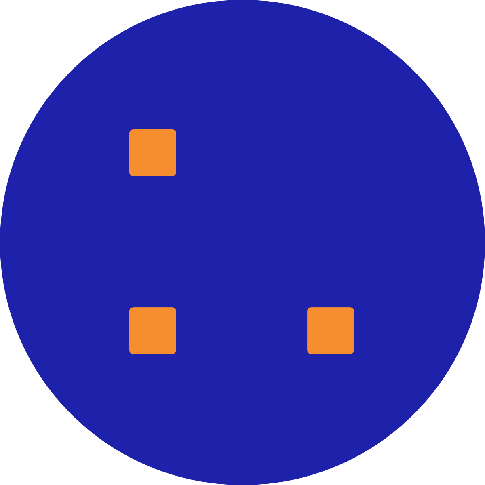
About me
(apparently some strong theoretical bounds on cos/sin 😅)
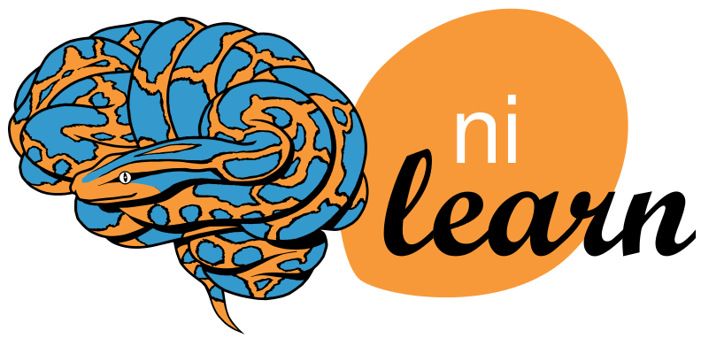
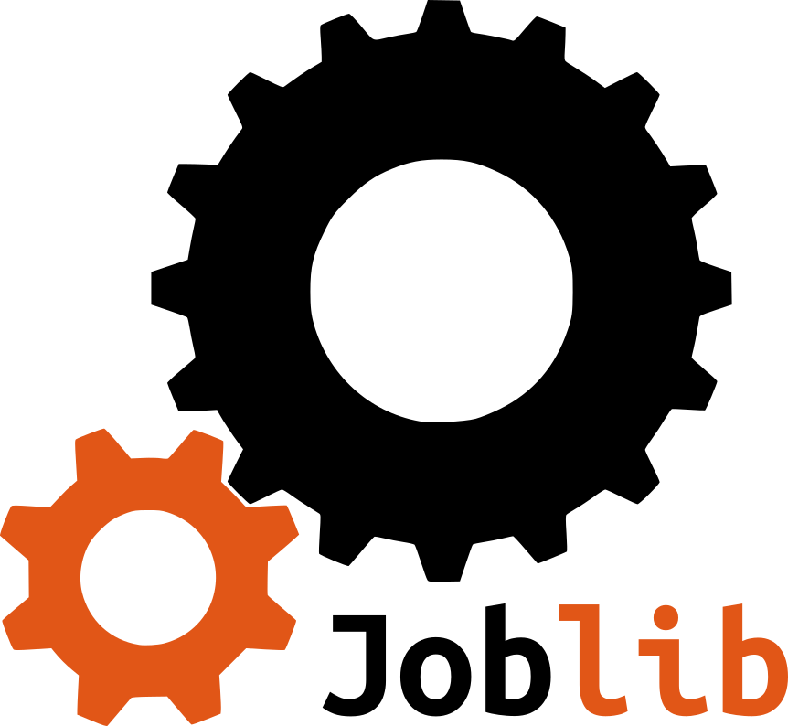

PyPI in the face 🤔🥧?
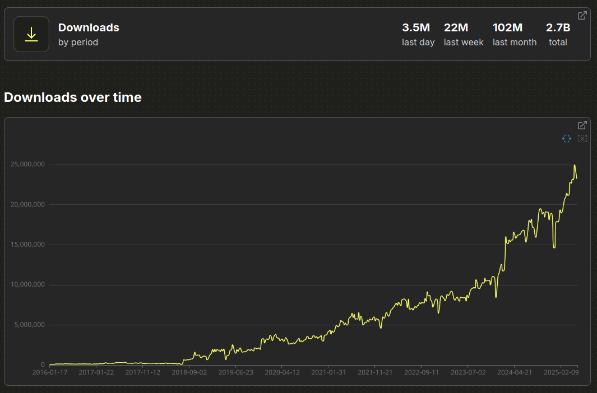
PyPI in the face 🤔🥧?
Useful websites/projects
Google BigQuery PyPI dataset
https://console.cloud.google.com/bigquery?p=bigquery-public-data&d=pypi&page=dataset
Source of truth, historical bug until July 2018
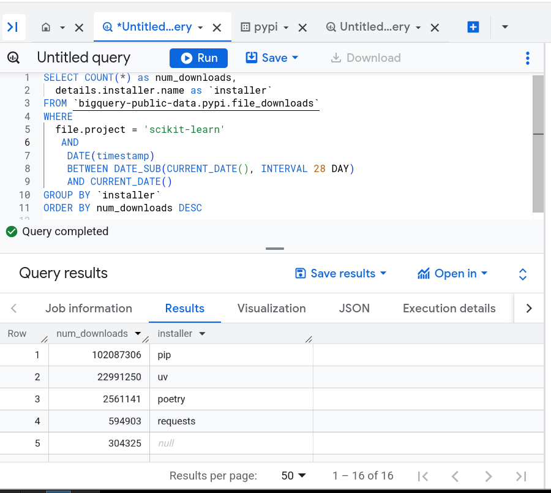
clickpy
clickpy: https://clickpy.clickhouse.com scikit-learn dashboard: https://clickpy.clickhouse.com/dashboard/scikit-learn
Copy and aggregation of the BigQuery DB. Historically there have been a few bugs so may want to double-check with Google BigQuery.
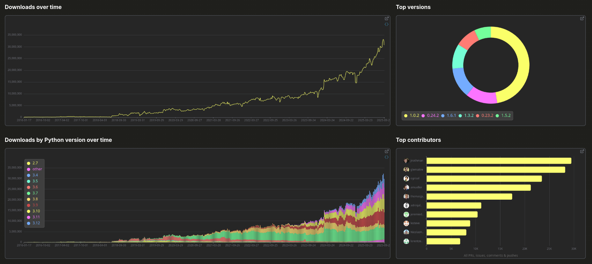
Can write your own SQL-like query to have more information
Open to change on their issue tracker (UI and “packages that needs refresh” wording)
maybe one day maybe: query + plots with Python using ibis on clickhouse DB
PyPI stats
PyPI stats: https://pypistats.org
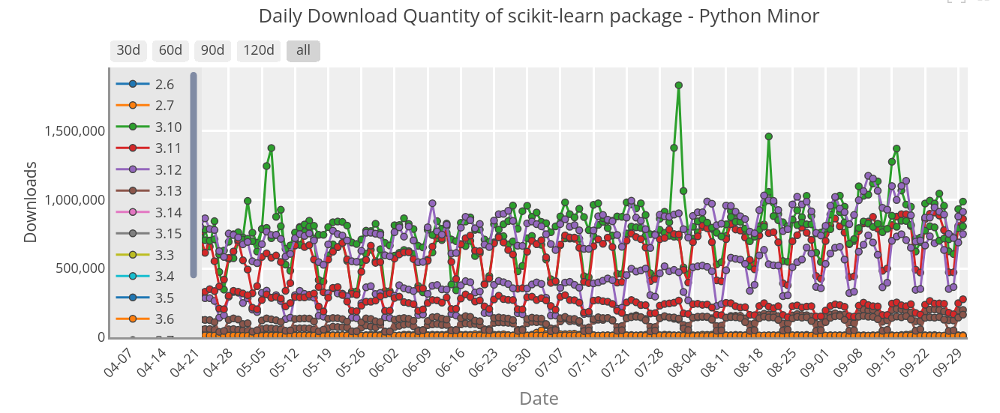
PSF has recently taken over the maintenance https://github.com/crflynn/pypistats.org/issues/82
Advantage: can tell with mirrors without mirrors only use pip in their aggregated numbers. No per-package version info.
Pepy
Pepy: https://pepy.tech avantage can look at different version.
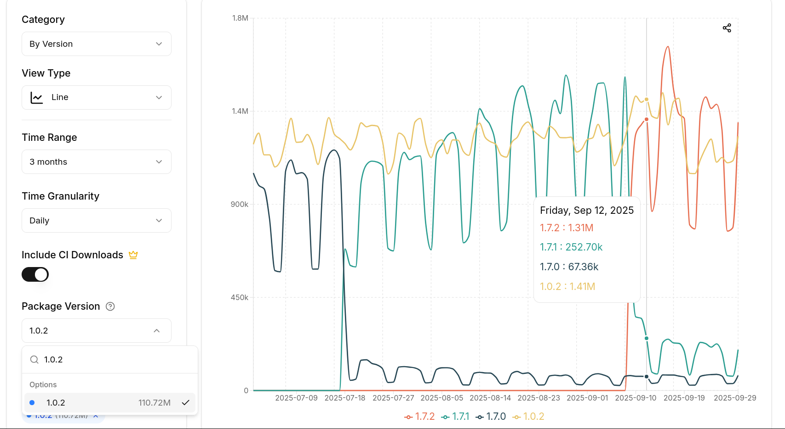
Aggregate numbers use Paid option for longer timeline CI. Download numbers are inflated compared to pypistats.org (more info later)
top-pypi-packages
top-pypi-packages: https://hugovk.github.io/top-pypi-packages.
github repo with one json per month for most downloaded projects. No need to write SQL query. Some small caveats query has changed a bit with time.
Hugo Van Keremade CPython developer with interesting blog posts on PyPI data
PyPI downloads caveats 101
From Python packaging user guide
piphas a local cache (~/.cache/pipon Linux)- as a “normal” user
pip install my-packageonly counts once (permy-packageversion) (per Python version for package with compiled code) - mirrors (PyPI index clones) see pypistats.org FAQ
- “not particularly useful: Just because a project has been downloaded a lot doesn’t mean it’s good; Similarly just because a project hasn’t been downloaded a lot doesn’t mean it’s bad!”
Caveat for newish packages: mirrors/installer type
skore
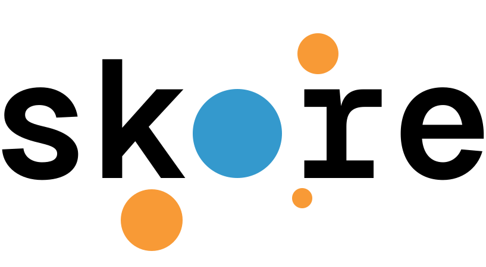
the scikit-learn sidekick https://github.com/probabl-ai/skore
Talk by Marie Sacksick “Enhancing ML workflows with skore” next (11:25) in Gaston Berger
Most downloads are from mirrors / something else than pip, uv etc …
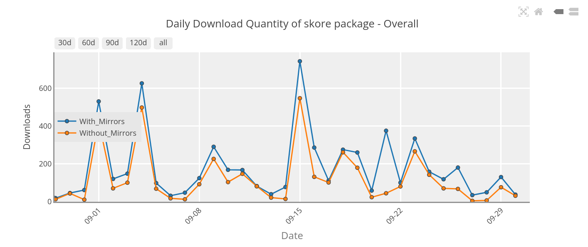
March 2025
| installer | downloads |
|---|---|
| bandersnatch | 771 |
| requests | 402 |
| uv | 336 |
| pip | 306 |
| Browser | 226 |
| NULL | 173 |
| … | … |
June 2025
| installer | downloads |
|---|---|
| pip | 1811 |
| uv | 814 |
| bandersnatch | 513 |
| NULL | 258 |
| Browser | 196 |
| requests | 78 |
| … | … |
installer type main source of discrepancy between different websites
pypistats.org only keep pip, others keep all installers
scikit-learn
scikit-learn
website statistics: 1.2M unique visitors per month
PyPI download stats: ~100M per month
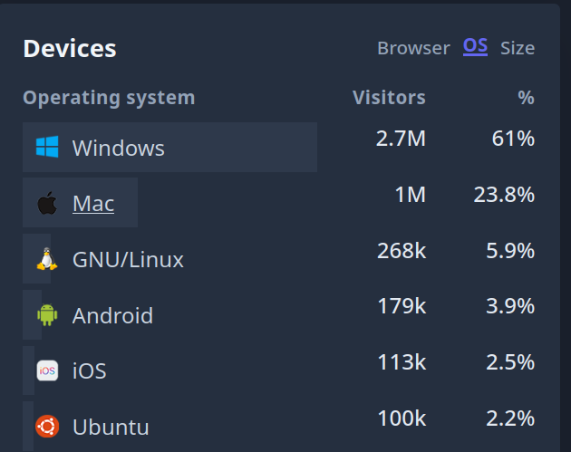
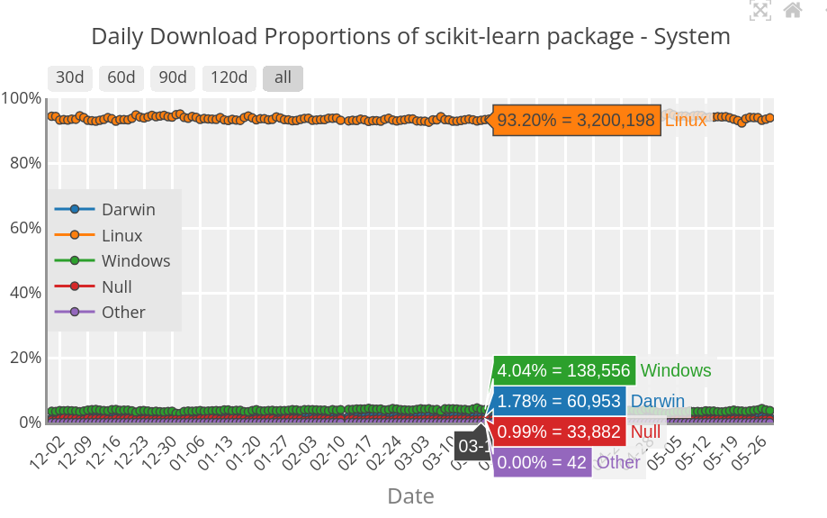
scikit-learn most downloaded release
Most downloaded scikit-learn release in 2025 is 1.0.2 released on 2021 Christmas day
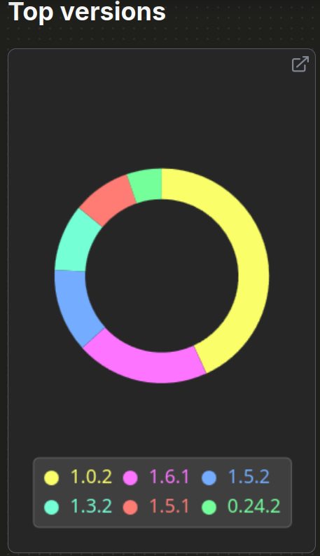
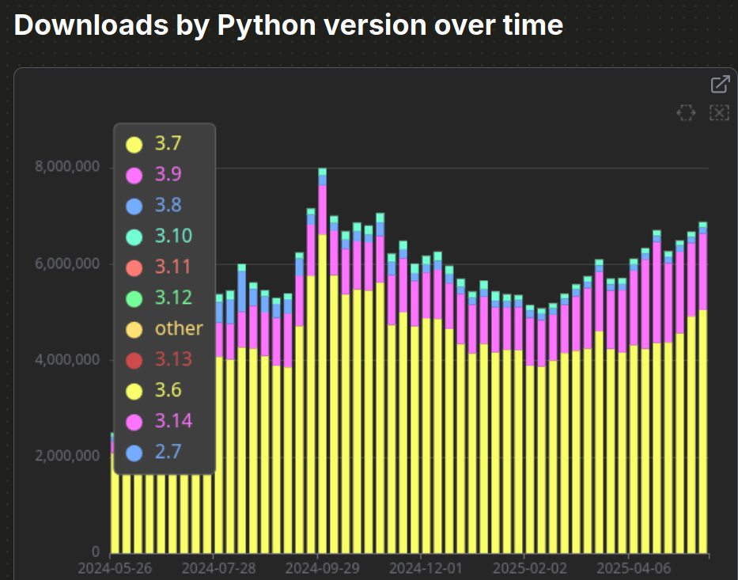
Reminder: Python 3.7 EOL 2023-06-27
scikit-learn Python 3.7 investigation
Found out through @hugovk blog post
BigQuery dataset has Linux distribution and version
92.4% of Python 3.7 downloads come from Amazon Linux 2
(Python 2 default, but you can install Python 3)
Query run in May 2025 (over one day):
- 30% of scikit-learn downloads comes from Amazon Linux 2
- 50%+ of scikit-learn downloads comes from Amazon Linux (2 or 2023)
name version
Amazon Linux 2 0.31
Amazon Linux 2023 0.22
Ubuntu 22.04 0.12
Debian GNU/Linux 12 0.07
Ubuntu 24.04 0.06
Ubuntu 20.04 0.05
Debian GNU/Linux 11 0.02
Ubuntu 18.04 0.01
CentOS Linux 7 0.01scikit-learn dependencies
scikit-learn depends on joblib
expectation: joblib is more downloaded than scikit-learn, right?
May 2025
scikit-learn 102M
joblib 87M
scikit-learn downloaded ~1.2x more than joblib 😱
possible hypothesis, no guarantee whatsoever:
- some link to release frequency?
- use system joblib on Linux distribution but need more recent version of scikit-learn?
- install scikit-learn for multiple Python versions?
- pip backtracking. Pathological situation where pip starts downloading many scikit-learn versions to try to satisfy constraints
scikit-learn dependencies: pip backtracking hypothesis
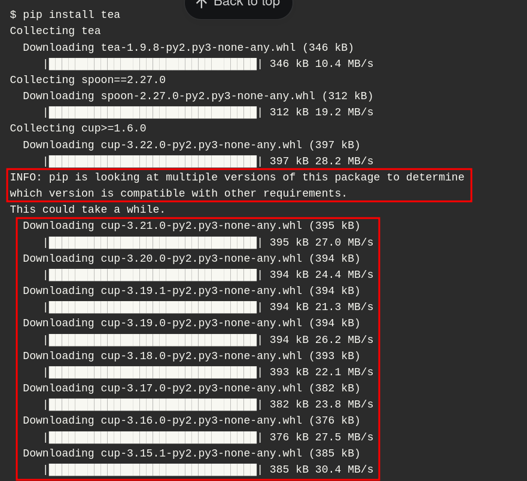
conda: joblib downloaded 1.2x more than scikit-learn
❯ condastats overall joblib scikit-learn scikit-learn --start_month 2025-03 --end_month 2025-07 --monthly
pkg_name time
joblib 2025-03 2275295
2025-04 2616275
2025-05 2266739
2025-06 2216331
2025-07 2170978
scikit-learn 2025-03 1930584
2025-04 2207607
2025-05 1908129
2025-06 1927962
2025-07 1845839
Exercise left to the reader: uv should show a similar pattern because has a better constraint solver?
sklearn
sklearn context
pip install scikit-learn but import sklearn
Historical decision make pip install sklearn “just work”, also avoid malicious actor taking the name
brownout strategy over one year (December 2022 - December 2023) SKLEARN_ALLOW_DEPRECATED_SKLEARN_PACKAGE_INSTALL=True as last resort escape mechanism
Naive attempt to disable the cache broke poetry
one sklearn release roughly once per month 0.0.post3 for March 2023, 0.0.post5 for May, etc …
PyPI stats seemed a good way to check that the brownout was working, right?
sklearn data
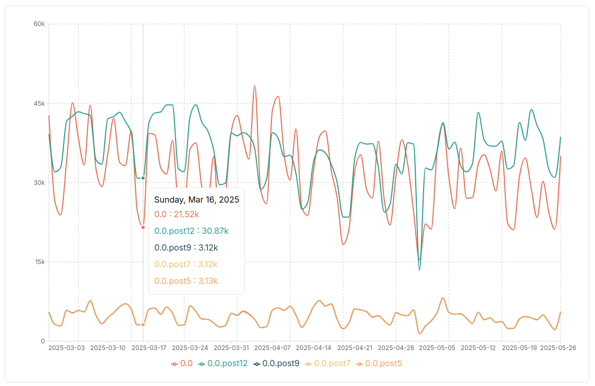
installer is mostly pip for 0.0.post5 and other transition releases, doen’t make much sense …
boto3 and friends
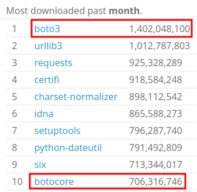
boto3 x.y.z depends on botocore>=x.y.z
new release almost every day
similar inversion pattern for other boto3 dependents: python-dateutil
botocore cached but not boto3 seems weird
six
six is in the top 20 in most downloaded packages in 2025 (15 years after Python 2.7 EOL)
easy to misinterpret it: people still care about Python 2 compatibility
reality: python-dateutil still depends on six
plenty of popular packages depend on python-dateutil, boto3, pandas, etc …
Separate “automated” vs “real” users?
details.cifield only in Google BigQuery db- based on environment variable
CI,BUILD_ID, …
scikit-learn: only 10-15% of the downloads are from CI
Summary of what I learned
- pay attention to installer type for newish/up-and-coming packages
- heavily influenced by cloud workflows (AWS in particular)
- dependencies being less downloaded than dependents doesn’t make too much sense
Best highly hypothetical wild-guess
- automated cloud workflows
- regenerating Docker images from scratch?
Half-baked thoughts about metrics
Metrics discussion
Goodhart’s law: When a measure becomes a target, it ceases to be a good measure
Not everything that can be counted counts, and not everything that counts can be counted (not Albert Einstein apparently)
Reality is complex => metrics help simplifying the message but sometimes gain way too much importance and force people to play the metrics game IMO (e.g. Shangai ranking for universities)
Metrics discussion
proxy metrics and big picture: I get it
numbers as a time-effective way to give credit to an opinion
bias: tend to stop looking when data matches the story you wanted to tell. Otherwise completely ignored.
Truth-O-meter in political fact-checking: mostly true, mostly false, pants on fire
Problem: fact-checking is always late to the party and never manages to correct wild claims/feel-good stories
Personal opinion about PyPI stats usage
seems fair
- using PyPI download stats for grants/fuding agencies/investors
- looking at top downloaded packages to have an idea about adoption e.g. free-threaded wheel, pyproject.toml, Python 2 vs Python 3
OKish
- general trend to have a very rough idea (wouldn’t read too much into it personally but 🤷)
misleading
- comparing two packages: this package is starting to catch up on this other one
- causal explanation: we did this and this is why downloads started to go up. Probably only a small part of the story
In the end I know
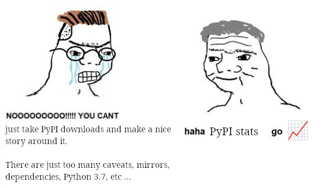
But at least I tried a little bit 😅
Conclusion
- I don’t really understand the reality that the PyPI download metrics describe. Many unexplained caveats in the data.
- likely heavily biased by cloud workflows (AWS in particular)
- maybe (just maybe) we should refrain from bold claims based on PyPI data
- using proxy metrics and telling stories, why not, but maybe clarify intent and confidence level
Other links
CHAOSS Practicioner about interpreting metrics: https://chaoss.community/practitioner-guide-introduction/